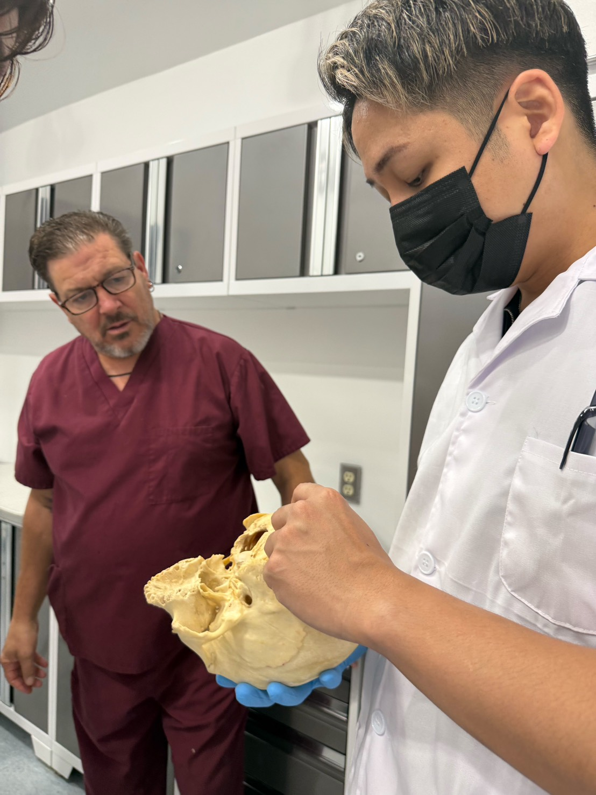

本講座は、トレーナーやセラピストとして活動されている方を対象としています。
施術やトレーニング指導といった「直接提供する」活動に加えて、講師として「教える」活動にも取り組みたい方。零式を深く学び、自分の地域で学びの場をつくりたい方に向けた制度です。
応募条件
- 「ヘッドコンディショニング 極」の受講済み・未受講を問わずご参加いただけます。
- 講師未経験の方もご参加いただけます。（指導法からサポートします）

零式-ヘッドコンディショニング 極-
認定講師養成
認定を取った、その先まで。

技術・指導法の習得から、
地域でのセミナー開催に向けた集客準備まで。
のりおとBAL代表・ミナミが支えます。
※2027年2月から講師活動開始を目指します
トレーナー・セラピスト
※極の受講有無・講師経験不問
2026年11月〜2027年1月末
※全10回程度・約20時間目安
オンライン座学 ＋ 東京対面
※アーカイブあり
440,000円（税込）
「もっと深く学んで、お客様に還元したい。」
認定講師を育てようと思ったきっかけは、受講者からいただいた、この言葉でした。
学びたいという意欲の先に、自分を頼ってくださるお客様の顔がある。
その想いに、僕自身も、もっと深く応えたいと思いました。
これまでのセミナーでも、僕が大切にしている技術と考え方を伝えてきました。
それでも、限られた時間の中では、伝えきれないことがあります。
こうした細部にこそ、施術者の理解と姿勢が表れます。
繰り返し実践し、疑問を言葉にし、対話を重ねる。その時間があってこそ、深まる学びがあります。
目の前の一人をよく見て、必要なことを、必要な分だけ。
技術を選ぶ理由にも、手を止める判断にも、責任を持つ。
それが、僕が零式で大切にしている姿勢です。
だからこそ、その深さまで一緒に向き合い、技術とともに、考え方や判断する力を次の誰かへ伝えられる人を育てたいと考えました。
疲労やストレスを抱えながらも、頑張ることが当たり前になり、休むことを後回しにしてしまう人がいます。
自分の疲れに気づいていても、立ち止まれない人がいます。
そんな人たちが、身近な場所で自分の身体に向き合い、ケアを受けられる。その機会を、もっと地域に増やしていきたい。
僕一人が施術できる人数にも、直接足を運べる地域にも限りがあります。
同じ想いを持つ施術者が各地域で深く学び、その学びを次の施術者へ手渡していく。
その先には、僕が直接出会うことのできないお客様がいます。
一人に深く伝えることが、その先の多くの人を大切にすることにつながる。
僕は、その可能性を信じています。
零式という自分のブランドを、そして大切にしてきた思想を、もっと広げていきたい。その想いも、確かにあります。
だからこそ、誰に、何を託すのかを大切にしたいのです。
僕が考える「本物」とは、自分の技術に責任を持ち、相手のために学び続けられる人です。
そんな人に、零式を託したい。
技術とともに、その技術を扱う姿勢を。
知識とともに、目の前の一人を大切にする思想を。
「もっと深く学んで、お客様に還元したい。」
その想いを、今度は地域に根づく学びへと育てていく。
学ぶ人から、伝える人へ。そして、その先のお客様へ。
それが、僕がこの認定講師養成を始める理由です。
本講座は、トレーナーやセラピストとして活動されている方を対象としています。
施術やトレーニング指導といった「直接提供する」活動に加えて、講師として「教える」活動にも取り組みたい方。零式を深く学び、自分の地域で学びの場をつくりたい方に向けた制度です。
学習ペースは週1回・2時間、全10回程度（約20時間）を目安に進行します。
オンラインでの座学・集客面談と、東京での対面技術研修を組み合わせた形式です。（アーカイブ配信あり）
主題は「知識をどうつなげるか」。知識や手順を単に覚えるだけでなく、学んだ内容を関連づけ、なぜその人にその技術を選ぶのかを自分の言葉で説明する力を育てます。
※対面会場や各回の日程・開始時刻、対面研修の回数・時間、アーカイブの対象範囲等の詳細は決定次第ご案内します。
TOTAL BODY FITNESS THEORY代表 / 零式 founder
パーソナルトレーナー・整体師（歴12年）
NASM-PES / NSCA-CPT
人体解剖実習（5回）
オステオパシー：スラストBASIC・ADVANCE、内臓調整を学ぶ
ヘッドコンディショニング、経絡ストレッチなどの専門家向け技術指導を行う。

BAL株式会社 代表取締役
元2ndPASS那覇校 代表・講師
運動指導者向けの教育コンテンツ企画・開発、講演イベントを手がける。
トレーナーの集客・マーケティングをテーマに、オンライン・対面の勉強会や情報発信を行う。
「技術は学びたい。でも、自分でセミナーに人を集められるだろうか？」
そんな不安も、相談しながら前に進められるように。
3ヶ月の養成期間では、技術を学ぶのと同時に、あなたの地域でセミナーを開催するための準備を始めます。
まずはオンラインでのミナミとの個別面談で、活動したい地域、これまでの経験、あなたの強みや人とのつながりを確認。
そこから、あなたに合った集客の進め方を構築していきます。
地域の特徴やあなたの経験を踏まえ、セミナーに参加してほしい人を具体的にしていきます。
参加することで何を学べるのか、どんな場面で活かせるのか。興味や申し込みにつながる伝え方を整理します。
SNSや既存のお客様への案内、地域でのつながりなど、あなたが活用できる手段をもとに、募集から申し込みまでの流れを考えます。
養成期間中から告知や発信を実践し、見込み参加者の反応を確認。手応えのあった方法を伸ばし、課題があれば一緒に改善します。
目指すのは、認定完了時に、技術を教える準備と、地域で参加者を集める準備が整っていること。
学んだことを活動につなげるために、3ヶ月を使っていきます。
※集客面談はオンラインで実施します。
※マーケティング支援は、ご本人と共同で取り組むものです。集客の全面代行や、集客人数・売上の保証ではありません。
講師活動に向けて、零式の知識・技術・指導法を学びます。
学んだ内容を実践し、レポートを提出します。
実践人数：10名
筆記試験・技術試験それぞれ70％以上を合格基準とします。
※不合格の場合、再試験は1週間後に実施します。
主催者から渡されるテーマについて30分間のプレゼンテーションを行います。知識同士をどうつなげ、筋道立てて伝えられるかを確認します。
所定の認定要件を満たした方は、契約条件に基づく開催権を取得し、地域での活動へ進みます。
所定の認定要件を満たした方は、2027年2月からの講師活動開始を目指します。
認定後は「零式-ヘッドコンディショニング 極-」の講座（開催時間：10:00〜18:00）を開催することができます。
また、認定講師としての講座開催にあたり、零式の名称・ロゴ・教材・修了証を利用できます。
※活動地域の制限や同一地域での人数制限、開催講座の料金規定、認定後の登録料・更新料の有無、ロゴ等の具体的な利用条件につきましては、詳細決定後、申込前にご案内します。
実際に募集・開催してみて分かることは、たくさんあります。
どんな案内に反応があったか、参加者が何に価値を感じたか、次回に向けて何を変えるとよいか。
その結果を一緒に振り返り、次の集客へ活かしていきます。
開催を重ねながら、あなたの地域や活動スタイルに合った集客方法を育て、講師として収益を得ながら活動を続けられる土台づくりを支援します。
※再試験・補講・交通宿泊等の費用の扱いや、認定後の各種条件、キャンセル・返金規定などの未確定事項は、お支払い前に詳細をご案内します。
※申込フォームは準備中です
費用や条件等を事前にご確認いただきます